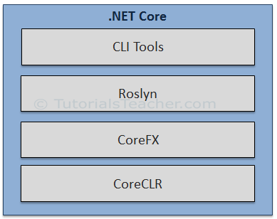

Q1. Dot NET Core Overview?
.NET Core is a new version of .NET Framework, which is a free, open-source,
general-purpose development platform maintained by Microsoft. It is a cross-platform framework that runs on
Windows, macOS, and Linux operating systems.
.NET Core Framework can be used to build different types of applications such as mobile, desktop, web, cloud,
IoT, machine learning, microservices, game, etc.
.NET Core is written from scratch to make it modular, lightweight, fast, and cross-platform Framework.In this
way, the .NET Core application speed up the performance, reduce the memory footprint and becomes easy to
maintain.
Q2. Dot NET Core Characteristics
Open-source Framework: .NET Core is an open-source framework maintained by Microsoft and
available on GitHub
Cross-platform: .NET Core runs on Windows, macOS, and Linux operating systems. There are different
runtime for
each operating system that executes the code and generates the same output.
Consistent across Architectures: Execute the code with the same behavior in different instruction set
architectures, including x64, x86, and ARM.
Wide-range of Applications: Various types of applications can be developed and run on .NET Core platform
such as
mobile, desktop, web, cloud, IoT, machine learning, microservices, game, etc.
Supports Multiple Languages: You can use C#, F#, and Visual Basic programming languages to develop .NET
Core
applications. You can use your favorite IDE, including Visual Studio 2017/2019, Visual Studio Code, Sublime
Text, Vim, etc.
Modular Architecture: .NET Core supports modular architecture approach using NuGet packages. There are
different
NuGet packages for various features that can be added to the .NET Core project as needed. Even the .NET Core
library is provided as a NuGet package.
This way, it reduces the memory footprint, speeds up the performance, and easy to maintain.
CLI Tools: .NET Core includes CLI tools (Command-line interface) for development and
continuous-integration.
Flexible Deployment: .NET Core application can be deployed user-wide or system-wide or with Docker
Containers.
Compatibility: Compatible with .NET Framework and Mono APIs by using .NET Standard specification
Q3. Dot NET Core Composition?
The .NET Core Framework composed of the following parts:

CLI Tools: A set of tooling for development and deployment.
Roslyn: Language compiler for C# and Visual Basic
CoreFX: Set of framework libraries.
CoreCLR: A JIT based CLR (Command Language Runtime).
Q4. Why ASP.NET Core?
Supports Multiple Platforms: ASP.NET Core applications can run on Windows, Linux, and Mac. So you don't
need to build different apps for different platforms using different frameworks.
Fast: ASP.NET Core no longer depends on System.Web.dll for browser-server communication. ASP.NET Core
allows us to include packages that we need for our application. This reduces the request pipeline and improves
performance and scalability.
IoC Container: It includes the built-in IoC container for automatic dependency injection which makes it
maintainable and testable.
Integration with Modern UI Frameworks: It allows you to use and manage modern UI frameworks such as
AngularJS, ReactJS, Umber, Bootstrap, etc. using Bower (a package manager for the web).
Hosting: ASP.NET Core web application can be hosted on multiple platforms with any web server such as
IIS, Apache etc. It is not dependent only on IIS as a standard .NET Framework.
Code Sharing: It allows you to build a class library that can be used with other .NET frameworks such as
.NET Framework 4.x or Mono. Thus a single code base can be shared across frameworks.
Side-by-Side App Versioning: ASP.NET Core runs on .NET Core, which supports the simultaneous running of
multiple versions of applications.
Smaller Deployment Footprint: ASP.NET Core application runs on .NET Core, which is smaller than the full
.NET Framework. So, the application which uses only a part of .NET CoreFX will have a smaller deployment size.
This reduces the deployment footprint.
Q5. ASP.NET Core - wwwroot Folder?
By default, the wwwroot folder in the ASP.NET Core project is treated as a web root
folder. Static files can be stored in any folder under the web root and accessed with a relative path to that
root.
In the standard ASP.NET application, static files can be served from the root folder of an application or any
other folder under it. This has been changed in ASP.NET Core. Now, only those files that are in the web root -
wwwroot folder can be served over an http request. All other files are blocked and cannot be served by default.
Generally, there should be separate folders for the different types of static files such as JavaScript, CSS,
Images, library scripts etc. in the wwwroot folder as shown below.
Q6. ASP.NET Core - Program.cs?
ASP.NET Core web application is actually a console project which starts executing from the
entry point public static void Main() in Program class where we can create a host for the web application.